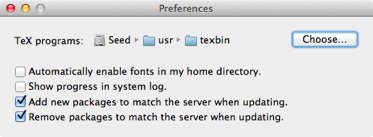

Preferences
TeX Live Utility has very few preferences, in order to keep things as simple as possible. However, a few global options can be set in the panel available via the Preferences item of the main menu:

TeX programs This is the path to the tlmgr command-line tool that TeX Live Utility uses. If you use MacTeX, the default setting of /usr/texbin is correct, but other distributions may require you to change this.
Automatically enable fonts in my home directory When checked, TeX Live Utility's will run the updmap command if it finds an updmap.cfg file in your TeX Live home directory, indicating that you have installed some personal fonts. If you have not manually installed fonts, as discussed here, you can leave this unchecked. Note: this setting only applies to TeX Live 2012 and later.
Show progress in system log When checked, TeX Live Utility's log output will be written to the system log. Now that logs are saved between sessions, this should generally be left unchecked.
Add new packages to match the server when updating If packages were added to TeX Live after you installed it, this will bring you up to date. You should almost never uncheck this box.
Remove packages to match the server when updating. Sometimes packages are removed from the server, typically due to licensing problems. If this box is checked, such packages will be removed from your system when you use the Update All action.
This box can generally be unchecked safely, if you're concerned about losing packages.
List fonts can be changed by using the standard Font panel from the Edit menu (Cmd-T). Font settings will persist between launches.